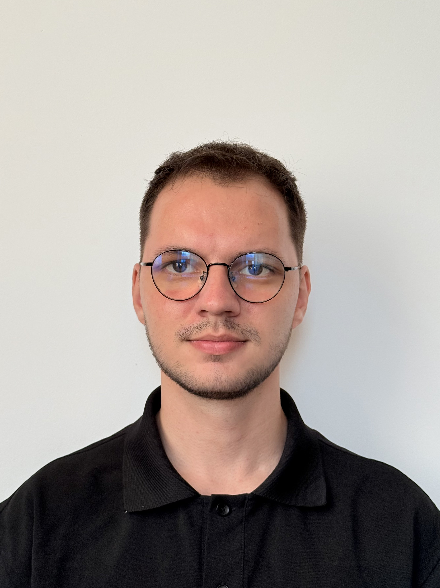

NOW
Stripe
Software Engineer · Bucharest
PERSONAL SITE
Software engineer at Stripe.
Computer science student and teaching assistant at POLITEHNICA Bucharest.

DENIS · PERSONAL PAGE01 / ABOUT
I’m Denis Covei, a software engineer based in Bucharest. I work at Stripe and study computer science at the Faculty of Automatic Control and Computers, POLITEHNICA University of Bucharest, where I also work as a teaching assistant.
My interests grew from physics and competitive programming into software, robotics, and building practical tools.
02 / BACKGROUND
NOW
Software Engineer · Bucharest
UNIVERSITY
Faculty of Automatic Control and Computers · Computer Science student and teaching assistant
ROBOTICS
Programmer for the FIRST Tech Challenge robotics team.
SCHOOL
Târgu Jiu · National Physics Olympiad qualifier. Earned 10.0 at Romania’s 2018 National Evaluation and was reported among CNTV’s 2022 perfect-score Baccalaureate graduates.
2023
Listed participant in the 2023 competition, representing POLITEHNICA Bucharest, Faculty of Automatic Control and Computers.
03 / SELECTED WORK
TOOLS I USE
C · C++ · Java · Python · TypeScript · JavaScript · React · C# · MATLAB · Shell
More on GitHub